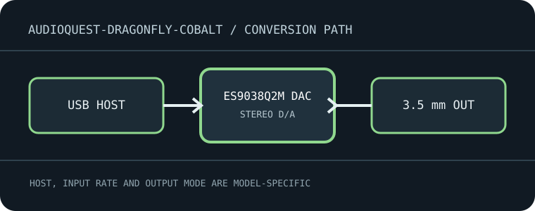

[ INDIVIDUAL MODEL // SOUND HARDWARE ]
AudioQuest DragonFly Cobalt
USB-powered portable DAC, preamplifier and headphone amplifier with a single USB digital input and 3.5 mm analog output.

Model-specific specifications
| Exact model / architecture | ESS ES9038Q2M DAC with asynchronous StreamLength USB transfer, monoClock timing and integrated headphone/line output stage. |
|---|---|
| Digital inputs / interface | USB-A plug carries stereo computer/mobile digital audio; a supplied USB-C DragonTail adapter and compatible mobile host adapters support other connector types. No optical or coaxial input. |
| Analog / digital outputs | One 3.5 mm stereo analog jack for headphones or line-level connection; output level is controlled by the source device. |
| Supported formats and rates | USB PCM up to 24-bit/96 kHz, with supported file playback including MQA decoding as described by AudioQuest. It has no optical/coaxial interface and cannot accept their S/PDIF formats. |
| Power | Powered from the USB host; no separate DC supply. Host current capability and mobile adapter/OTG mode affect reliable operation. |
| Drivers / host compatibility | Manufacturer lists computers, tablets, streamers and mobile devices; iOS requires the appropriate Apple Lightning-to-USB adapter, while USB-C/Android devices need host/OTG support. Standard desktop playback is host audio; check app output routing. |
| Compatibility caveats | Cobalt is the specific ES9038Q2M revision, not DragonFly Red or Black. Confirm the attached device is USB host-capable; do not expect optical/coax inputs, balanced output or independent hardware volume control. |
Compatibility & preservation
Cobalt is the specific ES9038Q2M revision, not DragonFly Red or Black. Confirm the attached device is USB host-capable; do not expect optical/coax inputs, balanced output or independent hardware volume control.
- Record the exact product name, hardware revision, serial range, included power supply, firmware and driver version before service.
- Match digital sample format/rate to the selected physical input and host mode; set downstream amplifier level safely before playback.
- Keep the model-specific manufacturer manual with the device; connector shape alone does not guarantee electrical or protocol compatibility.
Manufacturer sources
- DragonFly Cobalt manufacturer product specificationsManufacturer product documentation for the exact model and its revision-specific operation/specifications.
- Official DragonFly Cobalt Flight Manual (PDF)Manufacturer product documentation for the exact model and its revision-specific operation/specifications.